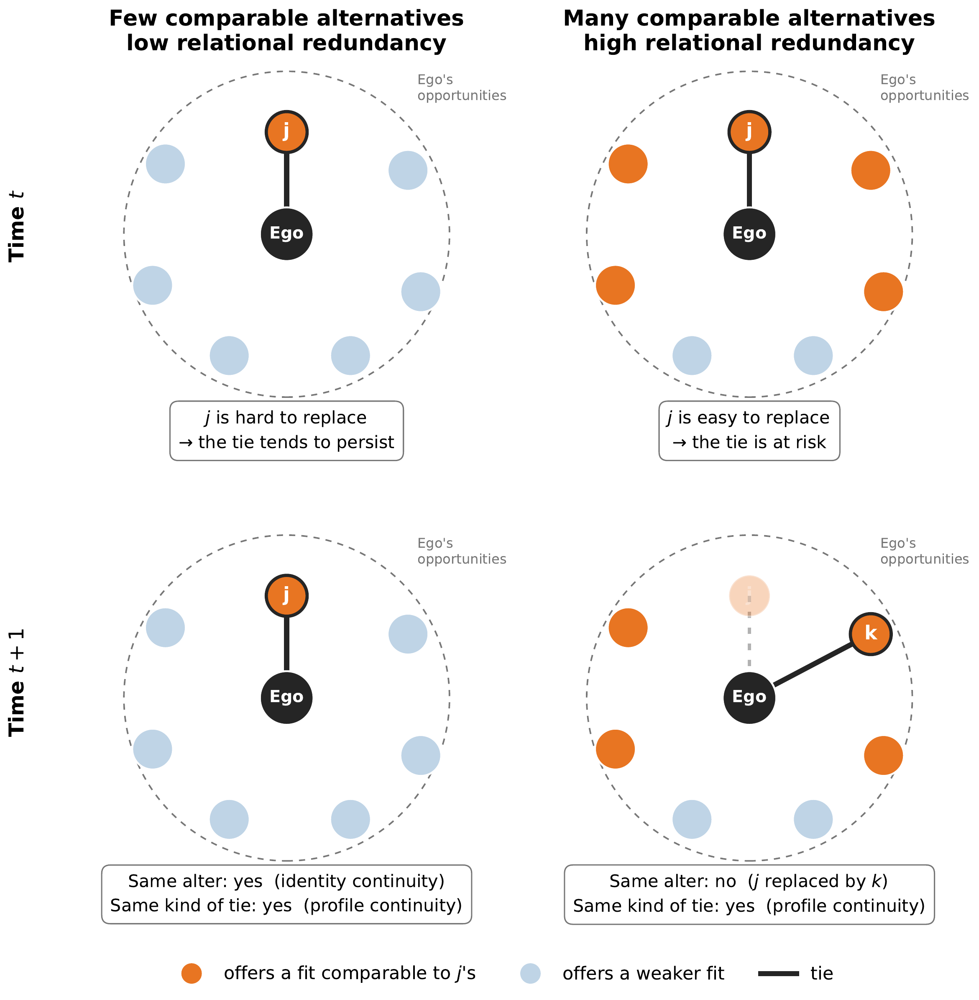
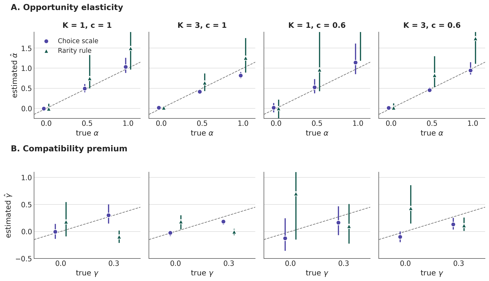
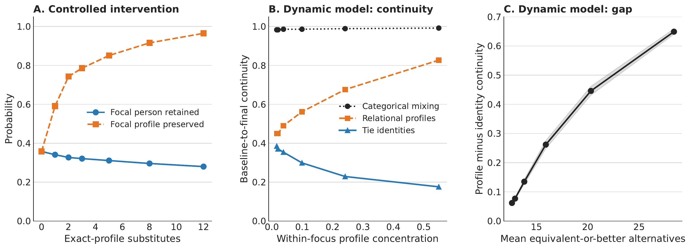
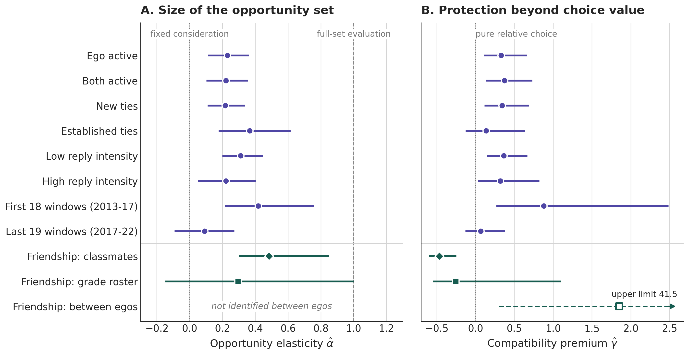

Opportunity Sets and Relational Persistence
Roberto Cantillan
Department of Sociology | Pontificia Universidad Católica de Chile
Similarity structures social relations, through choice and through structured opportunity.
Whether a tie survives depends not only on how well it fits, but on what else is available.
Feld 1981; McPherson, Smith-Lovin & Cook 2001; Zeng & Xie 2008; Kossinets & Watts 2009
Homophily describes fit; relational redundancy describes how reproducible that fit is.
A dyadic analysis sees the same tie in both cases. The difference lies in the opportunity set outside the dyad.

Two premises
Blau 1977, AJS 83:26–54
Two readings
Does persistence depend on how many alternatives a person has, or on how good they are?
That alternatives destabilize relationships is not new.
What is missing is a tie-level estimand that separates the number of alternatives from their value, and a way to test which one matters.
Emerson 1962; Rusbult 1980; South & Lloyd 1995; Snijders 2001; Stadtfeld & Block 2017
Not new: inclusive value (McFadden 1978), consideration sets (Manski 1977), the number of alternatives in the logit (Ackerberg & Rysman 2005), structural equivalence as competition (Burt 1987). New: asking this of ties, with an estimand built for it. Not Burt’s redundancy (next slides).
Three questions follow: does size matter, does compatibility protect a tie, and does the departed alter shape turnover?
Ego has a friend. What makes that friend easy to leave? Look at the people ego could befriend instead.
| Ego’s alternatives | How many | How good, relative to the friend | Threat to the tie |
|---|---|---|---|
| A crowd of poor matches | many | all far worse | low |
| A crowd with a few near-equals | many | a few as good | high |
| A handful, all near-equals | few | all as good | high |
The data decide: we regress whether a tie persists on its fit, on how many alternatives there are, and on how good they are.
\[ C_{ij} = \underbrace{\log n_{ij}}_{\text{volume}} + \underbrace{\bar L_{ij}-U_{ij}}_{\text{competitive quality}} \]
The decomposition separates how many alternatives there are from how good they are.
Inclusive value: McFadden 1978
| Burt (1992): structural holes | Ours: relational redundancy | |
|---|---|---|
| Redundant is… | a contact who leads to the same people as ego’s other contacts | an incumbent whose compatibility feasible alternatives could reproduce |
| Compared with | ego’s existing contacts | people ego is not tied to |
| Computed from | ties among ego’s contacts (cohesion, structural equivalence) | compatibility on a choice scale, and the size of the roster |
| Consequence | the contact adds little new information or control | the tie is easier to give up |
\[ \operatorname{logit}\Pr(\text{tie persists}) \approx \kappa\big[\rho+(1+\color{#175c50}{\gamma})\,U_{ij} -\color{#b33a3a}{\alpha}\log n_{ij}-\bar L_{ij}\big] \]
\(\alpha\) and \(\gamma\) are ratios: pooling protected and contested ties leaves them unchanged.
\(\alpha=1\)
Full-set evaluation
Every available alter competes with the incumbent. The default of actor-oriented models.
\(b_{\log n}=b_{\bar L}\)
\(\alpha=0\)
Bounded consideration
Only the value of alternatives matters, not their number.
\(b_{\log n}=0\)
\(\gamma=0\)
Pure relative choice
Compatibility protects a tie only through its value in choice.
\(b_U=-b_{\bar L}\)
Each hypothesis is one linear restriction; confidence sets follow by test inversion.
Consideration sets: Manski 1977; Abaluck & Adams-Prassl 2021. Number of alternatives in the logit: Ackerberg & Rysman 2005. Test inversion: Fieller 1954.
Calibrate from partner choice
Conditional logit of observed nominations on match indicators, one stratum per ego.
Weights cross-fitted: each school’s weights come from the other schools.
Tests of mechanisms that operate through alternatives are tests of a utility scale as much as of a mechanism.
Under relative choice, the entrant is drawn with probability \(\propto e^{U_{ik}}\)
What the model implies
What would break it
Profiles can persist because positions are sought — or because the ecology keeps supplying them.
Vacancy chains: White 1970. Turnover with stable composition: Wellman et al. 1997.
Online discussion (DerStandard)
School friendship (FIS)
Fraxanet et al. 2026; Leszczensky et al. 2022
01
Opportunity set
02
Choice scale
03
Decomposition
04
One logit
The same compatibility scale feeds the persistence logit and the turnover diagnostics.
Wild restricted score bootstrap: Kline & Santos 2012
01
A truth we set
02
Data that obey it
03
An analyst who does not know it
Two ways to score compatibility. Choice scale: the true utility that generated the data. Rarity rule: each shared trait weighted by how rare it is, a common shortcut.
Because the truth is known, any miss belongs to the estimator or the scale, not to the world.
Each panel is one design: \(K\) = ties ego holds; \(c\) = share of ties contested each period. Dashed line = truth; bars = 95% Monte Carlo intervals.

On the choice scale, \(\alpha\) is recovered and \(\gamma\) is conservative (attenuated, never inflated). On a rarity rule, \(\alpha\) is inflated and a premium appears where none exists.
Opportunity elasticity
.23
95% CI .11 to .36
.18 to .20 across audit specifications
Full-set evaluation (\(\alpha=1\))
rejected
\(p<10^{-10}\); also in each half of the decade
(first half \(p=.008\))
Compatibility premium
.33
95% CI .10 to .66
Persistence responds far more to how good the alternatives are than to how many there are.
Pupils may nominate anyone in their grade, yet 81% of incumbent friends are classmates. Within pupils, with separate value and size for each group of alternatives:
Within-class opportunity elasticity
.48
95% set .30 to .85 (grade-cohort clusters)
Alternatives threaten a friendship when they sit in the part of the setting ego draws on (the class, and within it ego’s own contacts); there, value counts about twice as much as number.
Between pupils
1.85
95% set .30 to 41.5
Compatibility appears to protect friendships almost three times more than choice implies.
Within pupils
−.26
95% set −.55 to 1.10
With ego fixed effects the premium disappears.
Pupils whose friends are more compatible keep friends longer for stable reasons of their own. A premium must be estimated within actors.
| Apparent finding on a rarity-weighted scale | After calibrating to partner choice |
|---|---|
| Pure relative choice holds among weakly embedded ties | Not supported |
| Reciprocity insulates ties from competition | Not supported |
| Entrants resemble the departed alter (vacancy filling) | Vanishes |
| Alternative value lowers persistence within pupils | Detected only on the choice scale |
What pupils act on
Sex 1.75 · origin .47 · religiosity .19 · lifestyle .20 · generation .09
What the rarity rule assumes
Every shared category weighted by its local scarcity; utility dispersion overstated about threefold
Calibrate compatibility before testing anything about alternatives.
Distance to the departed alter in entrant choice
| Specification | Rule weights | Estimated weights |
|---|---|---|
| Non-incumbent risk set | −.261 | −.066 |
| + ego’s portfolio taste | −.127 | −.036 |
| + network inheritance and foci | −.089 | −.009 |
Estimated weights, full model: bootstrap 95% interval [−.058, .061]; 11,784 exits, 878,087 candidates.
What predicts entry
With these profiles and controls, who left adds no detectable information about who enters.

What we built: an agent-based model. Artificial actors with four binary traits repeatedly pick \(K\) friends from a fixed set. A friend is worth the number of matching traits, the same bonus for every current friend, and a random shock. Nobody values a profile, scarcity or replacement.
What we read. Identity continuity: the same persons as at baseline. Profile continuity: the same trait combinations. A: hold one friendship fixed and add substitutes with the friend’s exact traits. B–C: vary how concentrated profiles are within each setting.
Persons churn (identity .39 → .18) while profiles hold (.45 → .83); group mixing stays near .99. In friendship, profile continuity (.618) is below the baseline the classroom supplies (.628).
Stable patterns need not be made of stable relationships. The ABM shows this is possible; it is not calibrated, so it cannot say how much occurs.
Size. The number of alternatives counts for less than proportionally: \(\hat\alpha\) is .23 online (.42 early, .09 late) and .48 in the class. Full evaluation is rejected online and, with some uncertainty, in the class.
Setting. Pressure comes from alternatives in the set ego draws on: in friendship, the class, and within it ego’s own contacts; other grade-mates add at most a tenth.
Protection. Compatibility protects online ties about a third more than choice implies; in friendship the apparent premium is ego heterogeneity.
Turnover. Profile continuity arises from ecological supply, without a detectable preference for replacing the previous occupant.
Relational opportunity: an opportunity structure bears on tie persistence mostly through how closely its alternatives approximate the incumbent’s value, and only inside the set ego draws on.
For Blau’s opportunity premise: for a particular tie, an opportunity is not another available person; its weight is its value relative to the incumbent
For actor-oriented models: the default treats every actor as an alternative (\(\alpha=1\)); the persistence logit is a diagnostic of that assumption before fitting large or multi-group networks
For measurement: compatibility scores must be put on the choice scale; rule-based scores produce spurious mechanisms
Settings in RSiena: Ripley et al. 2024. SAOMs as random-utility models: Pink, Kretschmer & Leszczensky 2020.
Observational design: ego fixed effects remove stable, not time-varying, heterogeneity
What \(\alpha\) measures: an elasticity with respect to the opportunity set as we measure it. In simulations, proportional measurement error barely moves \(\hat\alpha\); but if ego draws on a neighbourhood whose size does not scale with the measured set, \(\hat\alpha\) is near .05–.08 even when the elasticity within the neighbourhood is 1 (Backup B6)
Precision and the cap: the classroom estimate excludes full evaluation by cohort but not by school; with the 10-nomination cap, \(\hat\alpha\) is .81 below the cap and .35 at it
Interpretation: \(\alpha\) is not a count of the people an actor considers; \(\gamma\) assumes a shared error scale for choice and maintenance
Roberto Cantillan
Department of Sociology, PUC Chile
rcantillan@uc.cl
One slot; Type-I extreme-value errors; consideration set of size \(m_{ij}=\mu n_{ij}^{\alpha}\) drawn uniformly; incumbency premium \(\rho_{ij}=\rho_0+\gamma U_{ij}\); incumbent re-contested with probability \(c\).
\[ \Pr(\text{persist})=(1-c)+c\,\Lambda\big(\rho_0-\log\mu+(1+\gamma)U_{ij}-\alpha\log n_{ij}-\bar L_{ij}\big) \]
Local slopes of the logit:
\[ b_U=\kappa(1+\gamma),\qquad b_{\bar L}=-\kappa,\qquad b_{\log n}=-\kappa\alpha, \qquad \kappa=\frac{\Lambda}{1-c+c\Lambda}\in(0,1] \]
| Sample | \(b_U\) | \(b_{\bar L}\) | \(b_{\log n}\) | \(\hat\kappa\) | \(\hat\alpha\) [95% CI] | \(\hat\gamma\) [95% CI] | \(n\) |
|---|---|---|---|---|---|---|---|
| Ego active | .890 | −.671 | −.154 | .67 | .23 [.11, .36] | .33 [.10, .66] | 529,282 |
| Both active | .903 | −.658 | −.145 | .66 | .22 [.10, .36] | .37 [.14, .73] | 512,374 |
| New ties | .965 | −.719 | −.156 | .72 | .22 [.11, .34] | .34 [.11, .68] | 406,200 |
| Established ties | .673 | −.592 | −.216 | .59 | .37 [.18, .62] | .14 [−.13, .63] | 115,946 |
| Low reply intensity | 1.008 | −.740 | −.229 | .74 | .31 [.20, .44] | .36 [.15, .67] | 291,813 |
| High reply intensity | .782 | −.593 | −.131 | .59 | .22 [.05, .40] | .32 [.03, .82] | 225,710 |
| First 18 windows (2013–17) | .843 | −.449 | −.188 | .45 | .42 [.21, .76] | .88 [.26, 2.48] | 205,734 |
| Last 19 windows (2017–22) | .937 | −.877 | −.079 | .88 | .09 [−.09, .27] | .07 [−.13, .37] | 317,480 |
Ego and window fixed effects; SEs clustered by ego and window; utility scale from partner choice (\(\hat\lambda=1.747\)); Fieller intervals.
| Design | Scale | \(b_U\) | \(b_{\bar L}\) [\(p\)] | \(\hat\kappa\) | \(\hat\alpha\) [95% set] | \(\hat\gamma\) [95% set] |
|---|---|---|---|---|---|---|
| Between egos | Rule | .141 | −.072 [.016] | .07 | n.i. | .97 [−.05, 5.5] |
| Between egos | Calibrated rule | .437 | −.592 [.121] | .59 | n.i. | −.26 [−.65, 59] |
| Between egos | Estimated weights | .562 | −.197 [.033] | .20 | n.i. | 1.85 [.30, 41.5] |
| Within ego | Estimated weights | .606 | −.815 [.004] | .82 | .29 [−.15, 1.00] | −.26 [−.55, 1.10] |
| Within ego, classmates | Estimated weights | .589 | −1.103 [<.001] | 1.10 | .48 [.30, .85] | −.47 [−.60, −.25] |
| Within ego, other grade-mates | Estimated weights | .224 [.17] | — | — | — |
Wild restricted score bootstrap (10 schools, all \(2^{10}\) patterns; or 29 grade-cohorts, 9,999 draws). n.i. = not identified between egos.
| Diagnostic | Relative choice | + Durable taste | + Positional demand |
|---|---|---|---|
| Same-profile alternatives, given \(\bar L\) | 0 | < 0 | < 0 |
| Portfolio taste in entrant choice | 0 | > 0 | ≤ 0 |
| Distance to departed alter, net of taste | 0 | small, sign-unstable | < 0 |
| Distance to departed alter, taste omitted | 0 | < 0 | < 0 |
A negative similarity-to-departed coefficient cannot by itself be read as vacancy filling.
Signatures established by known-truth simulations (1,500 egos, eight replications per regime and ecology).

In both settings, the opportunity that bears on persistence is a bounded setting weighted by value, not a headcount.
| What the analyst measures, relative to what ego draws on | \(\hat\alpha\) if true \(\alpha=0\) | \(.5\) | \(1\) |
|---|---|---|---|
| The correct set | .02 | .44 | .90 |
| A random half of the alternatives | .03 | .53 | 1.01 |
| A random quarter | .05 | .59 | 1.22 |
| Correct set plus infeasible alters (+50% of set) | .00 | .44 | .92 |
| Correct set plus 100 infeasible alters, whatever \(n\) | .07 | 1.06 | 2.24 |
| Ego draws on a neighbourhood of 30% of the class; analyst measures the class | .40 | .46 | .85 |
| Neighbourhood size unrelated to class size; analyst measures the class | .02 | .05 | .08 |
| The same, analyst measures the neighbourhood | .12 | .40 | .80 |
Mean \(\hat\alpha\) over 6 replications of 20,000 egos; \(K=3\), \(c=.6\), \(\gamma=.3\).
Errors proportional to the set are benign; errors that do not scale with it are not. A low \(\hat\alpha\) is compatible with ego weighing a whole neighbourhood whose size does not grow with the measured set.
Abaluck, J., & Adams-Prassl, A. (2021). “What Do Consumers Consider before They Choose?” Quarterly Journal of Economics 136(3):1611–1663.
Ackerberg, D. A., & Rysman, M. (2005). “Unobserved Product Differentiation in Discrete-Choice Models.” RAND Journal of Economics 36(4):771–788.
Blau, P. M. (1977). “A Macrosociological Theory of Social Structure.” American Journal of Sociology 83(1):26–54. doi:10.1086/226505.
Emerson, R. M. (1962). “Power-Dependence Relations.” American Sociological Review 27(1):31–41.
Feld, S. L. (1981). “The Focused Organization of Social Ties.” American Journal of Sociology 86(5):1015–1035.
Fieller, E. C. (1954). “Some Problems in Interval Estimation.” Journal of the Royal Statistical Society B 16(2):175–185.
Fraxanet, E., Gómez, V., Kaltenbrunner, A., & Pellert, M. (2026). “A Decade of News Forum Interactions.” Scientific Data 13:1193.
Kline, P., & Santos, A. (2012). “A Score Based Approach to Wild Bootstrap Inference.” Journal of Econometric Methods 1(1):23–41.
Kossinets, G., & Watts, D. J. (2009). “Origins of Homophily in an Evolving Social Network.” American Journal of Sociology 115(2):405–450.
Leszczensky, L., Pink, S., Kretschmer, D., & Kalter, F. (2022). “Studying Youth’ Group Identities, Intergroup Relations, and Friendship Networks.” European Sociological Review 38(3):493–506.
Manski, C. F. (1977). “The Structure of Random Utility Models.” Theory and Decision 8(3):229–254.
McFadden, D. (1978). “Modelling the Choice of Residential Location.” In Spatial Interaction Theory and Planning Models, 75–96. Amsterdam: North-Holland.
McPherson, M., Smith-Lovin, L., & Cook, J. M. (2001). “Birds of a Feather: Homophily in Social Networks.” Annual Review of Sociology 27:415–444.
Pink, S., Kretschmer, D., & Leszczensky, L. (2020). “Choice Modelling in Social Networks Using Stochastic Actor-Oriented Models.” Journal of Choice Modelling 34.
Ripley, R. M., Snijders, T. A. B., Boda, Z., Vörös, A., & Preciado, P. (2024). Manual for RSiena. University of Oxford.
Rusbult, C. E. (1980). “Commitment and Satisfaction in Romantic Associations.” Journal of Experimental Social Psychology 16(2):172–186.
Snijders, T. A. B. (2001). “The Statistical Evaluation of Social Network Dynamics.” Sociological Methodology 31:361–395.
South, S. J., & Lloyd, K. M. (1995). “Spousal Alternatives and Marital Dissolution.” American Sociological Review 60(1):21–35.
Stadtfeld, C., & Block, P. (2017). “Interactions, Actors, and Time: Dynamic Network Actor Models for Relational Events.” Sociological Science 4:318–352.
Wellman, B., Wong, R. Y., Tindall, D., & Nazer, N. (1997). “A Decade of Network Change.” Social Networks 19(1):27–50.
White, H. C. (1970). Chains of Opportunity. Cambridge, MA: Harvard University Press.
Zeng, Z., & Xie, Y. (2008). “A Preference–Opportunity–Choice Framework with Applications to Intergroup Friendship.” American Journal of Sociology 114(3):615–648.
Cantillan | When Do Alternatives Threaten a Tie? | 2026